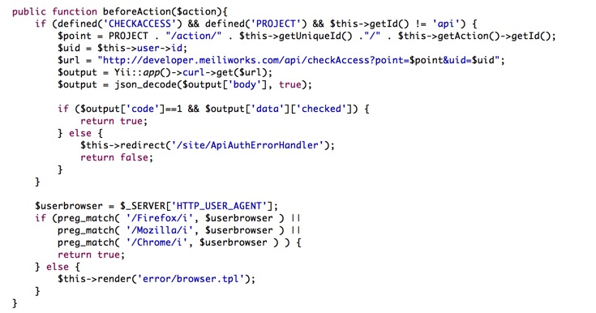
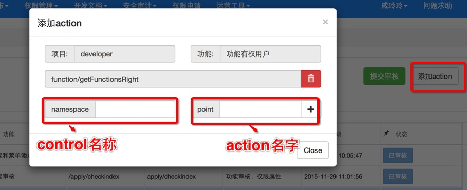

在权限平台接入新的项目流程介绍和接入中的常见问题。
1、用yii框架
查看framework/components/Controller.php文件中是否有下图代码；如果有在自己的文件中define CHECKACCESS为true和PROJECT为你的项目名

2、非yii框架和框架没有封装权限验证的情况，参考调用权限接口的文档
*注：如果已经分配了权限但是调用接口发现返回没权限，请在项目发布－>项目管理中对应项目的功能管理页找到对应的功能，点击添加action按钮看功能是否有action，具体如下图所示：

3、菜单展现
1、创建了项目但是没有权限：
在创建项目的时对应的开发人是有项目的所有权限的，建议负责任和开发者都添加为开发者（多个开发者用半角逗号','隔开），这样方便查看
2、功能希望所有人可见：
请在项目发布－>项目管理对应的项目下,选中自己的项目，点击白名单管理来添加白名单，白名单功能不进行权限验证
3、功能下有操作，希望可以对功能分配权限后，相应人员有操作的权限：
给对应的功能添加action
4、希望页面的展现和操作等权限分开管理
将操作添加为一个新的功能，然后对其进行权限管理
还有问题请咨询 戚玲玲，QQ：741605369，电话：13810315838